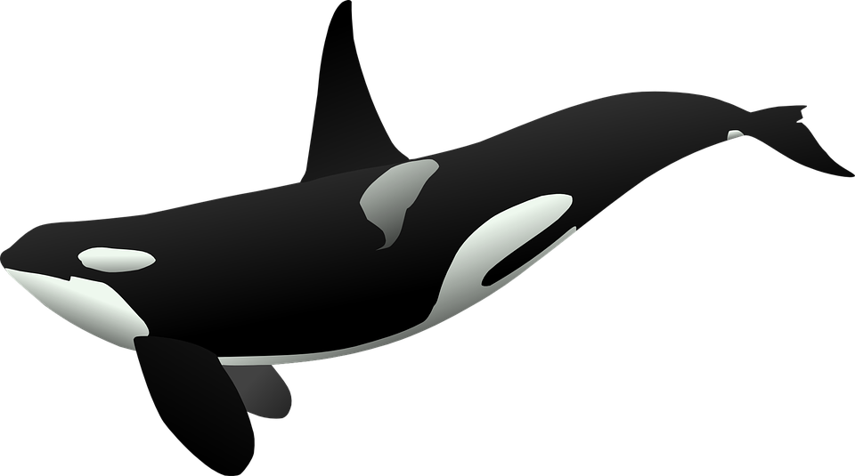

if Whale die, We die

關於鯨生鯨世
About Us
Sea Shepherd)周二(29日)表示，今年不會再派船隻出海阻止日本捕鯨行動，因為日本政府出動軍事裝備與武器保護捕鯨船，自知絕無可能對抗政府的軍力及財力，將尋求其他策略。
我們的方法
國際護鯨組織「海洋守護者」 放棄狙擊日本捕鯨船. 3121. 出版時間：2017/08/29 23:14. 法新社資料照片. 國際反捕鯨組織「海洋守護者」協會(Sea Shepherd)周二(29日)表示，今年不會再派船隻出海阻止日本捕鯨行動，因為日本政府出動軍事裝備與武器保護捕鯨船，自知絕無可能對抗政府的軍力及財力，將尋求其他策略。 協會創辦人華國際護鯨組織「海洋守護者」 放棄國際護鯨組織「海洋守護者」
我們的目標
（合台幣約2億8610萬）打造高速船「海洋勇士號」（Ocean warrior），將在12月投入南極海域保護鯨魚的行動。法新社報導，全球海洋守護協會執行長康奈里森（Alex Cornelissen）表示全球海洋守護協會（Sea Shepherd Global）獲得荷蘭、英國及瑞典彩券機構贊助，斥資830萬歐元（合台幣約2億8610萬）打造高速船「海洋勇士號」（Ocean warrior），將在12月投入南極海域保護鯨魚的行動。法新社報導，全球海洋守護協會執行長康奈里森（Alex Cornelissen）表示，「有了這艘海洋勇士號，我們首度能夠破壞性捕撈、海洋酸化與氣候變遷，都嚴重威脅海洋健康生態。每年，至少有30萬條鯨魚遭誤捕而死。近40年來，綠色和平和全球許多保護海洋的組織並肩作戰，最終目標，是推動全球40%海洋劃為海洋保護區！